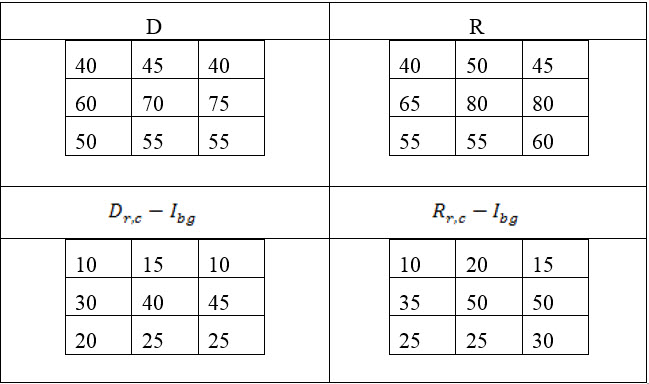

The flux area option calculates the flux area ratio percentage between defect and reference images based on the position of flux area region over them. The following example illustrates the method of calculation.
Assume the following values for transmitted images:
GL value for Quartz region (Intensity of Fore Ground): Ifg = 230
GL value for MoSi region (Intensity of Back Ground): Ibg = 30
GL matrix of flux area region on defect image: D
GL matrix of flux area region on reference image: R
Row index: r
Column index: c
The flux area ratio is then calculated:
and values placed into a matrix to calculate the defect and reflex flux areas:

Flux Defect Flux Area = r,c {(Dr,c – Ibg) / (Ifg – Ibg)} = 220 / (230 - 30) = 1.1
Reference Flux Area = r,c {(Rr,c – Ibg) / (Ifg – Ibg)} = 260 / (230 - 30) = 1.3
With the defect and reference flux areas calculated, the flux area ratio percentage is calculated:
The calculated Flux Area Ratio % is reported as T Flux (%) in Defect Information table (refer to “Using the Defect Information Table” for details). If you resize or move the Flux Area boxes, Calibre DefectReview automatically recalculates and updates the T Flux (%) value. The calculations are based on the following equations:
Reflected Defect Flux Area = x,y {(Ibg – IDEF) / (230 – 30)} = (220) / (200) = 1.1 [sq pixels]
Reflected Reference Flux Area = x,y {(Ibg – IREF) / (230 – 30)} = (255) / (200) = 1.275 [sq pixels]
Ratio = (1.1 / 1.275) – 1.0 = (-0.13725) = -13.7 [%]
The calculated Flux Area Ratio % value is reported as R Flux (%) in the Defect Information table (refer to “Using the Defect Information Table” for details). If you resize or move the Flux Area boxes, Calibre DefectReview automatically re-calculates and updates the R Flux (%) value.
The values for Qz and MoSi are fetched using the following attributes from the inspection file:
LRF X-700
Transmitted:
Qz level = ShadingResult.TMode.QzPix
MoSi level = ShadingResult.TMode.CrPix
Reflected:
Qz Level = ShadingResult.RMode.QzPix
MoSi Level = ShadingResult.RMode.CrPix
LRF X-800
Transmitted:
Qz level = ShadingResult.Result.TransBright / 4
MoSi = ShadingResult.Result.TransDark / 4
Reflected:
Qz level = ShadingResult.Result.ReflectDark / 4
The width and height of the flux rectangle displayed in the IMU can be configured using the FluxAreaConfiguration node in the dat-ini.xml file. The default width and height of the flux rectangle is 9x9.